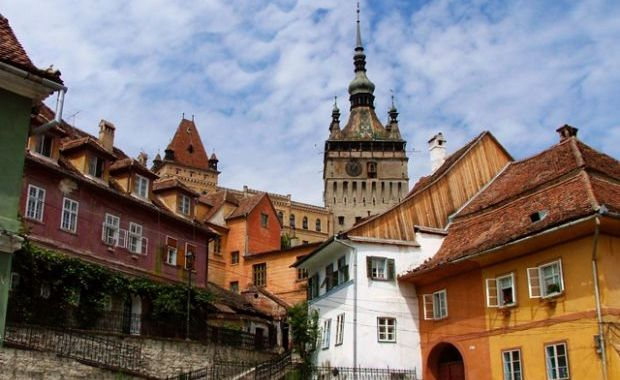

KSZC Nagyatád Ady Endre gimnázium
Én egy diák vagyok a 9.C-ből
Na most csak egy szöveg mert hogy legyne valami jó
A második napunk egyből pakolással kezdődött mivel másik szállásra mentünk. Az utazás közben megnéztük a tordai sóbányát és a segesvári várat.
A sóbányába rengeteg lehetőség volt hogy elköltsd a pénzedet pl: óriáskerékkel, bowlingal és különféle szuvenírekkel.A várban is sok minden kis ajándékot szuvenírt lehetett venni.
Ezután egyenest a szállás felé vettük az irányt Székelyudvar fele.
A szállásra 8-9 óra fele odaértünk berendezkedtünk és elmehettünk vásárolni. VÉGE
